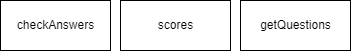
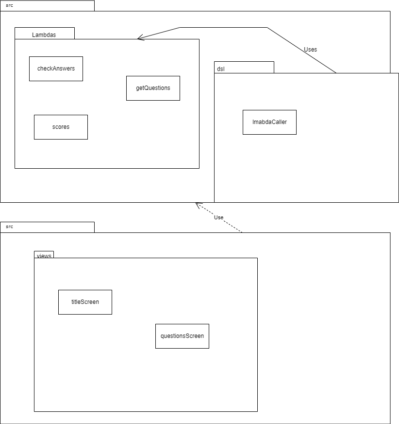
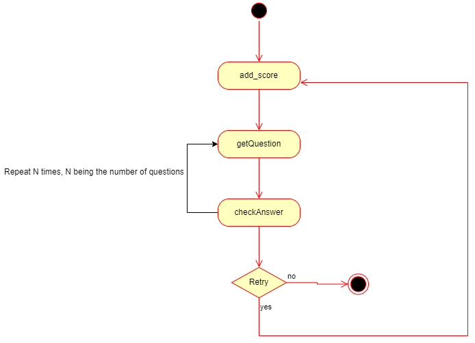
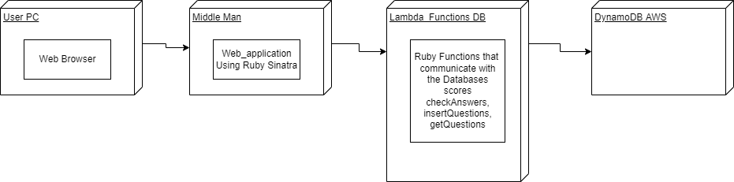
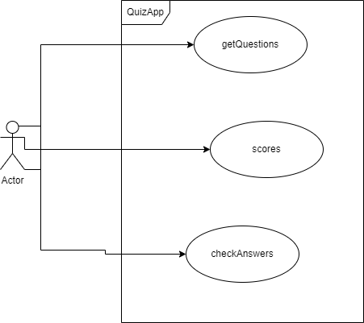

Application Design and Architecture¶ ↑
| Authors |
Jose Luis Hernández Soto, Emiliano Javier Gómez Jiménez |
| Date |
June 10, 2022 |
Overview of the Project¶ ↑
The structure of this project is at follows.
quiz/
├─ doc/ Folder produced by RDoc.
├─ dsl/ Folder for the DSL Sinatra model
├─ img/ Folder for the images used in the README Rdoc.
├─ Lambdas/ Folder for the functions that will use the Lambda feature in AWS.
└─ src/ Folder for the application’s source code.
└─ views/ Folder for the server that is in charge of calling the Lambda func
For this application the original plan was to divide into 3 parts using the MVC model. The model or back-end is a group of lambda functios created in AWS that send various data to different DynamoDB databases. The Controller or middle-man is built using Sinatra and communicates with the Lambda Functions that are in the AWS. The View or Front-End is a group of erb files that display an interface to the user.
Installing and Running the Application¶ ↑
Front-End: The applicationis supposed to use both Bootstrap and Sinatra to generate a graphic interface. If it were functionalyou would need to install it's dependencies with npm:
$ npm install.
Middle-Man:
This file uses Ruby 2.3 or any higher version of the language. It also need the Sinatra gem installed. To run this server instance we need to run the command:
$ ruby -I . -w /dsl/lambdaCaller.rb
Back End:
The different functions that are used with the multiple databases and give the proper functionality to the front-end are mounted in AWS Lambda Functions. These are configured in Ruby version 2.5 in their base environment. These functions have service keys that are modeled using the RESTful API that takes requests and responses JSON files.
4+1 Architectural View Model¶ ↑
Logical View¶ ↑
The lambda functions can represented as Objects in an UML diagram. The reason we do this is because there is no better way to represent them. All these clases are not dependant of each other and are equally important.

Development View¶ ↑
In this view we separated both the back-end and the front-end . In the front-end we can change the url to the ones in the lambda functions and should in theory work. The middle man is placed in the back-end to protect the lambda functions from unwanted access.

Process View¶ ↑
In this diagram it shows the different processes that the lambda functions can do. This is all done by the middle man.

Physical View¶ ↑
In this view we see the multiple technologies used in the application. AWS being the main service with both Lambda and DynamoDB that are needed to run the project. Although in the Front-end of the project a service called Bootstrap is used to help with the design of the interfaces.

Scenarios¶ ↑
This diagram shows that the user is able to intereact with the system in three ways. The user doesn't need any third parties to interact with the application:

Patterns Used¶ ↑
- <b>Domain-Specific Language</b>: The +lambdaCaller.rb+ file is a web application with different routes - <b>Model View Controller</b>: The applications follows a basic MVC Architecture like any web application - <b>Microservices</b>: The main basis of this project were microservices.
References¶ ↑
- \R Olsen. <em>Desing Patterns in Ruby</em> Addison-Wesley, 2007
- \J Fields. <em>Refactoring with Ruby</em> Addison-Wesley, 2009
- SourceMaking.com <em>Desing Patterns</em> {https://sourcemaking.com/design_patterns}, Accesed June, 2022
- SourceMaking.com <em>AntiPatterns</em> {https://sourcemaking.com/antipatterns}, Accesed June, 2022